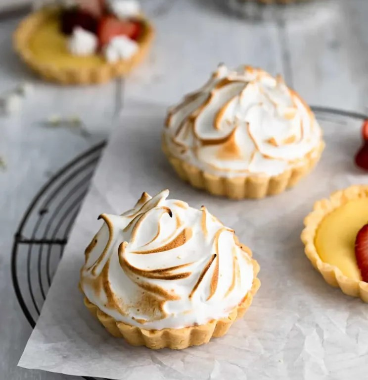
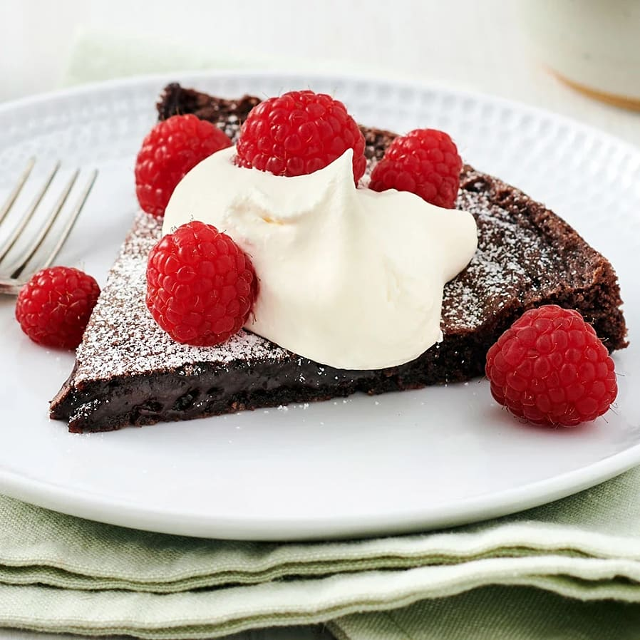
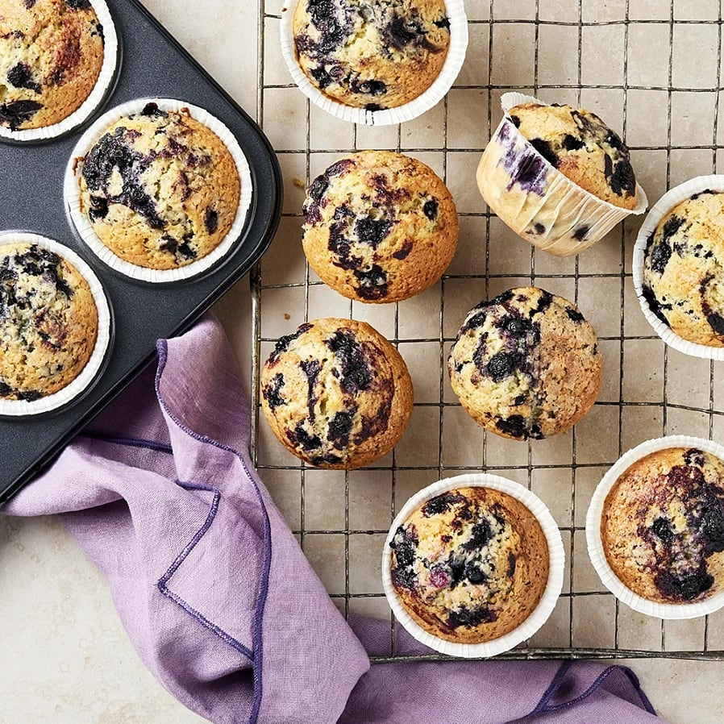

Hej och välkommen till Rebeckas receptsida! Här kommer du att hitta tre olika recept på goda efterätter, Citronmarängpaj, Kladdkaka och Blåbärsmuffins. Jag hoppas att du kommer gilla dessa efterrätter och bjuda nära och kära på gott fika.


